Try the extension on sixteen made-up listings
Seven of these are products the CPSC has recalled, written the way sellers write them: a nickname, often no model number, never the year. With the extension on, each of the seven gets a badge. Click it to see the recall, where the problem is in the photo, and what to do. The Tango Mini stroller was recalled for four model numbers only: open its listing, save the seller's label photo, and add it to the card to settle it.
- Download the extension and unzip it.
- Open
chrome://extensions, turn on Developer mode, choose Load unpacked, pick the folder. - Reload this page. Badges appear as listings are checked, the matched ones first.
Chrome's built-in model (Gemini Nano) does the first look on your computer when Chrome has it. Without it the extension still works: the listing's words decide what the cloud looks at. No Chrome? Check a screenshot on the web page.
baby gear · Seattle area
16 results
-
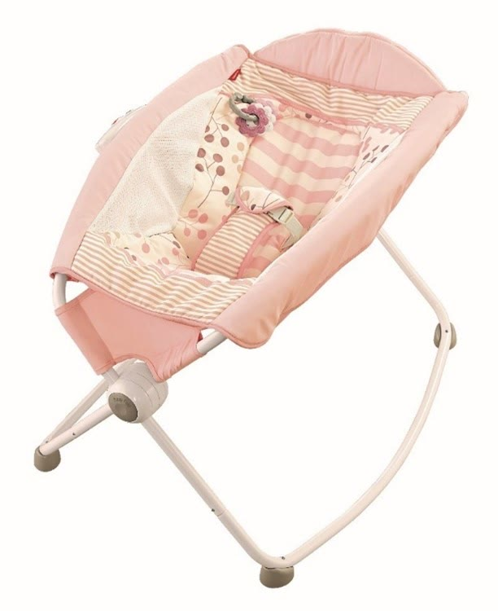
Fisher-Price Rock 'n Play sleeper, pink, folds flat -
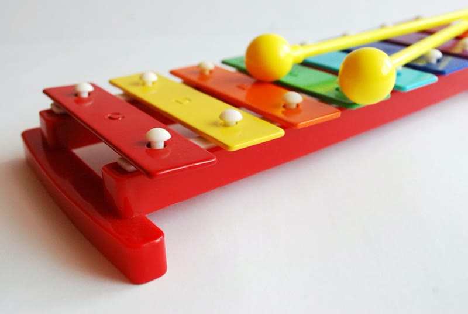
Kids xylophone with two mallets -
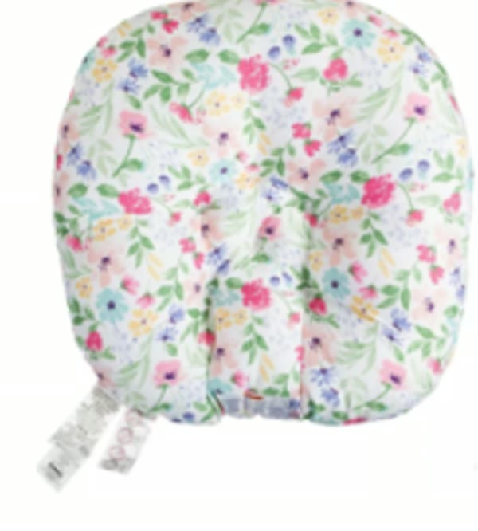
Boppy newborn lounger, floral cover, washed -
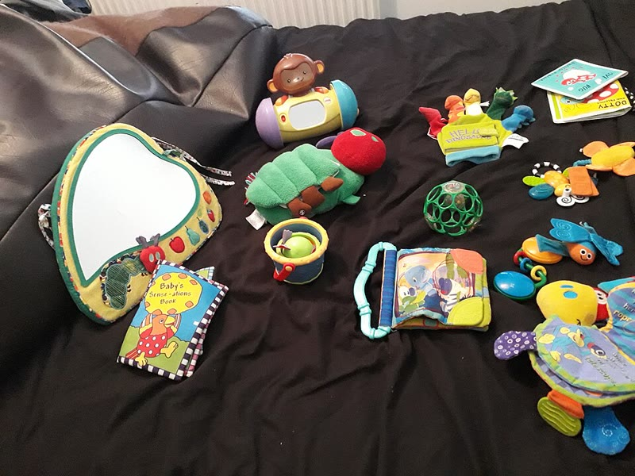
Lot of baby toys: mirror, soft books, teethers -
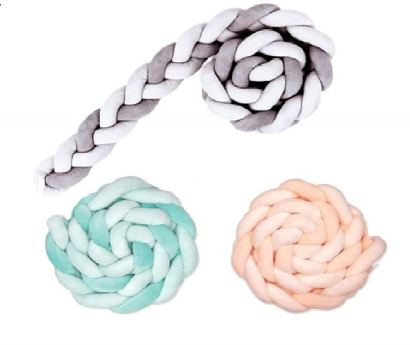
Braided crib bumper, mint, fits a standard crib -
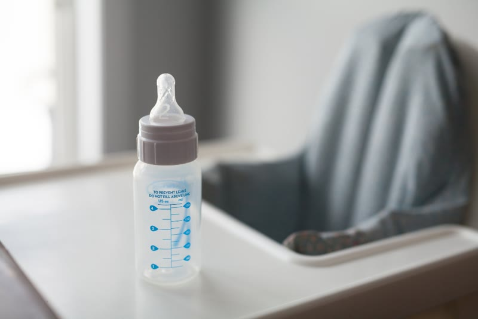
Glass baby bottle, never used -
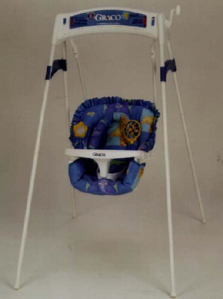
Graco baby swing, wind-up, still swings -
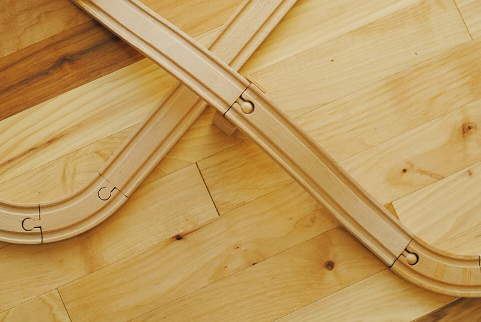
Wooden train tracks with a bridge, about 30 pieces -
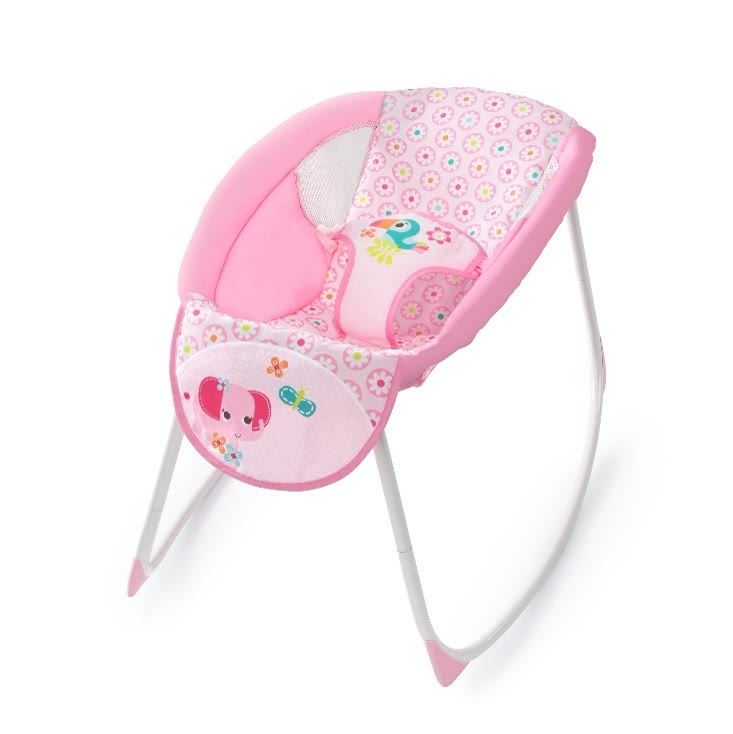
Bright Starts rocking sleeper, vibrates, pink -
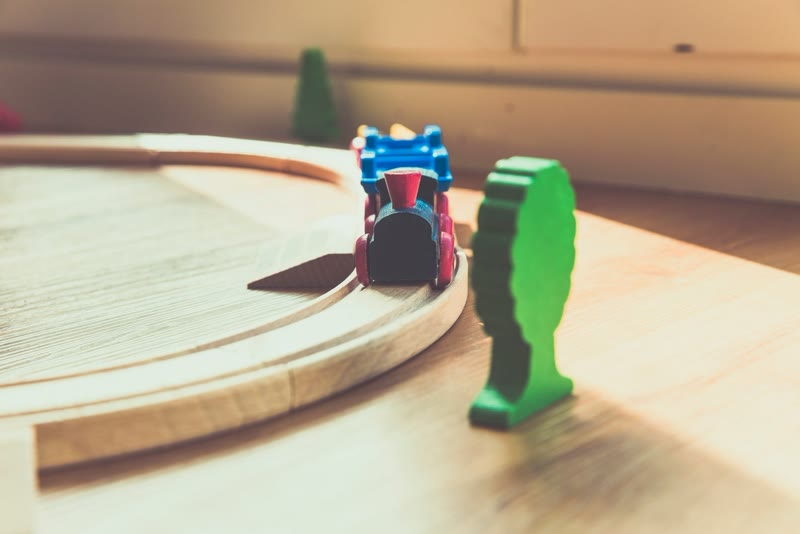
Small wooden train and tree -
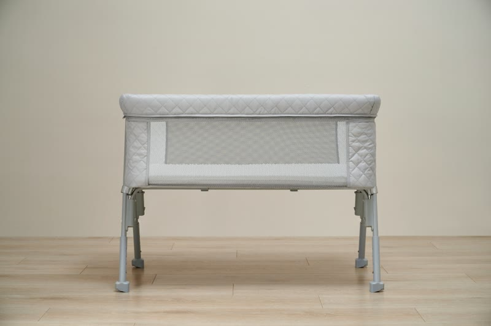
AirClub bedside bassinet QX-831, gray mesh, with pad -
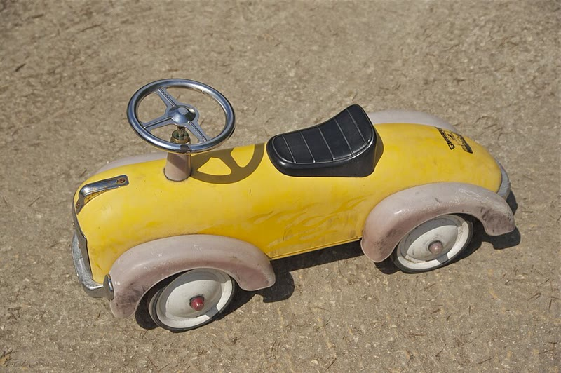
Yellow ride-on car, metal, vintage style -
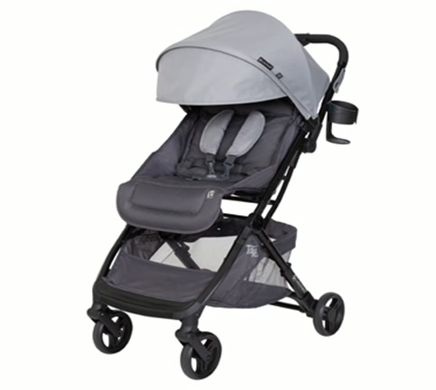
Baby Trend Tango Mini compact stroller, gray -
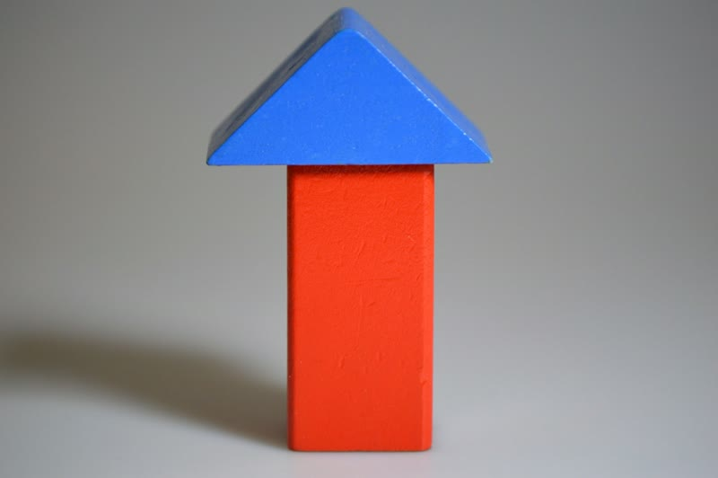
Wooden building blocks, painted - Blank wooden jigsaw puzzle, 20 pieces
-
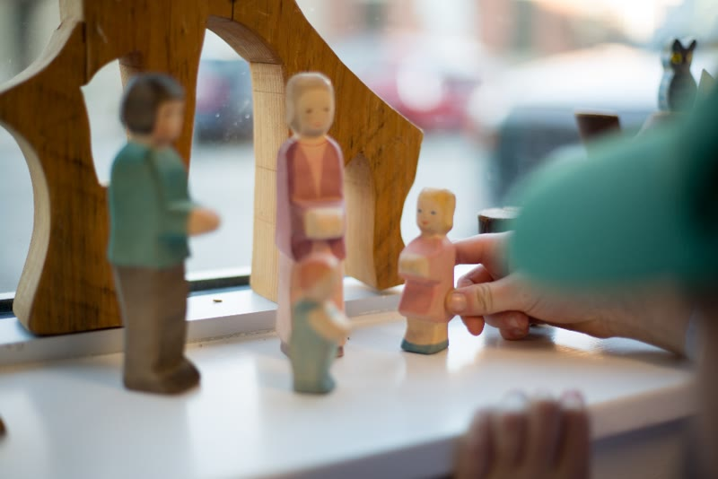
Wooden peg people and stable set